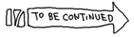

Twitter @anywhereでブログのコメント欄っぽいものを作る
概要
necomimi publishに手軽にコメント機能を付けようと思ったので、実行。
参考
http://ichitaso.blogspot.com/2012/04/twitter-anywhere.html
試しにこのページに実装してみます。
@toru_inoue
手順
1.Twitterに登録
2.anywhere用のscriptを埋め込む

先にシェルのテスト書いちゃうね。
完成予想
・ページに
[@toru_inoue (to 12/04/26 2-09-41) コメントする]
とか付ける
・過去にページに対してコメントされたものを取得、表示する（出来る分だけでいいや）
・各ページに勝手に付くように、footer化する（どう変化するのが一番楽なのか、悩ましい）
メモ
twitter Dev
https://dev.twitter.com/apps/2074317/settings
ブログにした猛者が
http://creazy.net/2010/04/twitter_anywhere.html